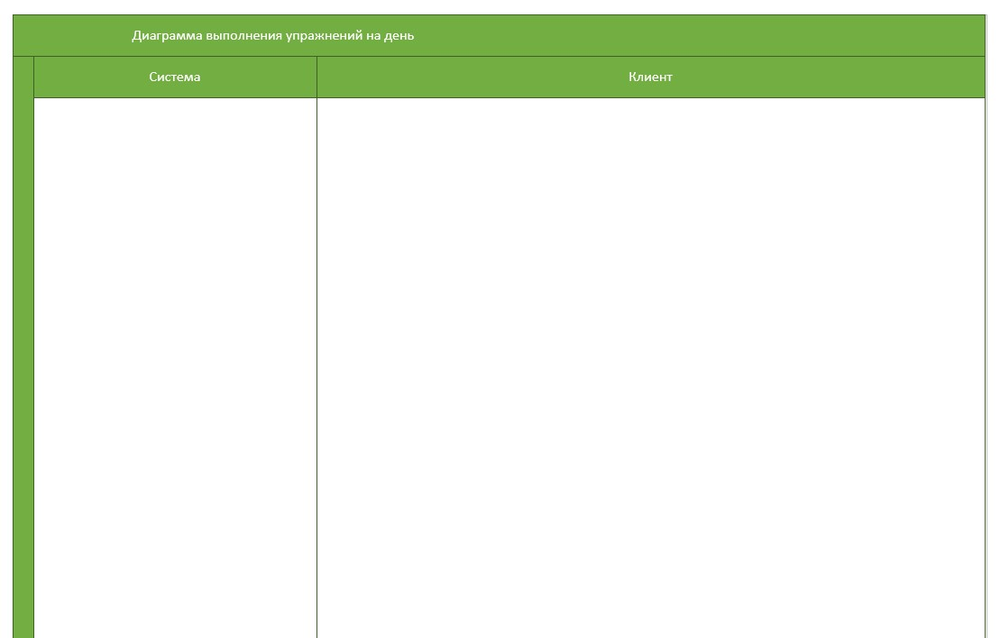
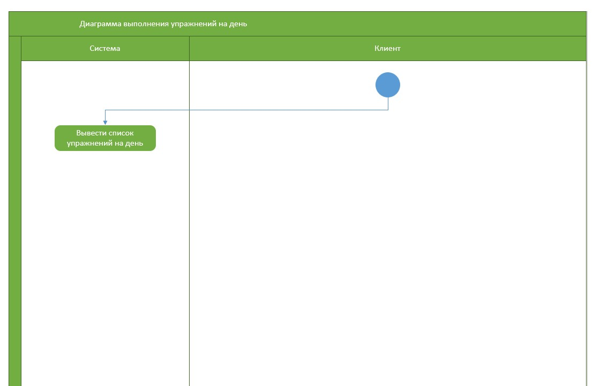
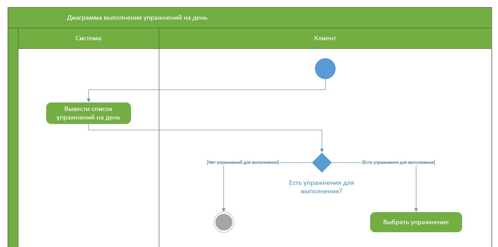
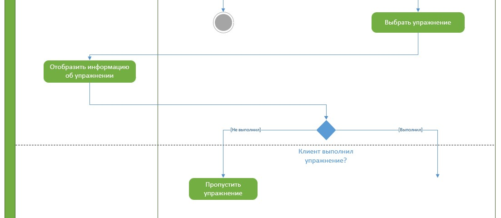
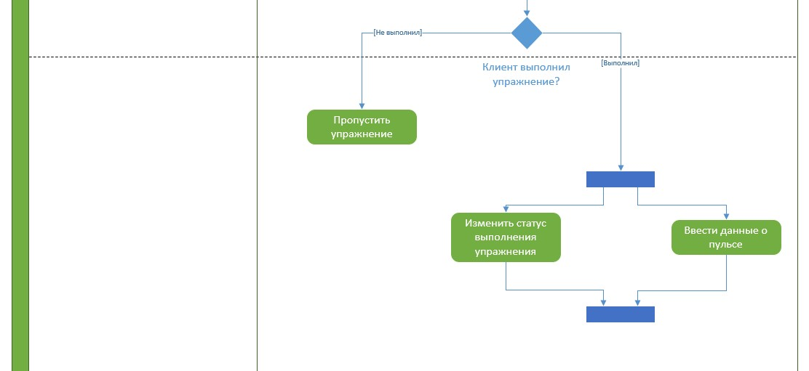

Диаграмма деятельности UML
- Диаграмма деятельности — технология, позволяющая описывать логику процедур, бизнес-процессы и потоки работ
- Основным отличием диаграмм деятельности от блок-схем является активная поддержка параллельных процессов, что объясняет применение диаграммы деятельности для моделирования потоков работ
Пример построения диаграммы деятельности
В данном занятии демонстрируется построение диаграммы выполнения фитнес-упражнений в течение дня. Основные шаги построения диаграммы деятельности:
- Добавление основных элементов
- Работа с операциями
Важно
Для построения диаграммы деятельности используется шаблон "Схема деятельности UML" программы Visio
Добавление основных элементов
1. Добавляем дорожки

Важно
Дорожка (англ. swimlane) — часть области диаграммы деятельности для отображения деятельностей, за которые отвечает конкретный объект (например, пользователь или организационное подразделение). Диаграмма-пример содержит две дорожки: «Система» и «Клиент»
2. Добавляем узлы и операции

Важно
Диаграмма деятельности должна начинаться с начального узла (англ. activity initial node), в котором начинаются поток или потоки при вызове деятельности извне, и завершаться конечным узлом (англ. activity final node), который останавливает все потоки данной деятельности. В примере начальный узел изображается голубым кругом, а конечный узел — серым. Операции (англ. operations) являются ключевыми элементами диаграммы деятельности и отображаются зелеными овалами
Работа с операциями
1. Отображаем условное поведение типа решение

Важно
Решение (англ. decision) имеет один входящий и несколько защищенных выходящих потоков. Защитой является условное выражение, помещенное в скобки. Так как при достижении решения выбирается только один из выходных потоков, защиты должны быть взаимоисключающими. Пример защиты —
«[Есть упражнения для выполнения]»
2. Отображаем условное поведение типа слияние

Важно
Слияние (англ. merge) означает завершение условного поведения, которое было начато решением
3. Реализуем параллельные потоки

Важно
Для реализации параллельных потоков используются точки разделения и точки слияния. Из точки разделения (англ. fork node) выходят два и более потока, выполняющихся паралелльно. Точка слияния (англ. join node) синхронизирует потоки, т. к. каждый из них ждет достижения этой точки остальными потоками, после чего продолжается последовательное исполнение
Итоги
Вы познакомились с правилами построения диаграммы деятельности UML.